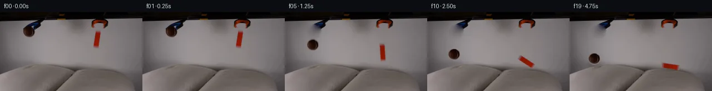

![首帧]()

Round 00
2026-11-04T19:02:39.254047+00:00像素候选变化代码 +231/−0inspection 更新
pixels e0c2a19023337238 · code dc6e590331692e99
查看本轮 generate.py 真实 diff
--- previous/generate.py
+++ current/generate.py
@@ -0,0 +1,231 @@
+#!/usr/bin/env python3
+"""Generate the 20-frame PixelWorld continuation using only local pixel operations."""
+
+from pathlib import Path
+
+import numpy as np
+from PIL import Image, ImageDraw, ImageFilter, ImageFont
+
+from artifact_io import save
+
+
+ROOT = Path(__file__).resolve().parent
+W, H = 256, 144
+RESAMPLE = Image.Resampling.BICUBIC
+
+
+def mask_image(draw_fn, blur=0.0):
+ """Create a grayscale mask with an optional sub-pixel soft edge."""
+ mask = Image.new("L", (W, H), 0)
+ draw_fn(ImageDraw.Draw(mask))
+ if blur:
+ mask = mask.filter(ImageFilter.GaussianBlur(blur))
+ return mask
+
+
+def harmonic_fill(source, hard_mask, iterations=420):
+ """Fill masked pixels from their fixed boundary using discrete harmonic diffusion."""
+ source_f = np.asarray(source, dtype=np.float32)
+ unknown = np.asarray(hard_mask, dtype=np.uint8) > 127
+ seed = np.asarray(source.filter(ImageFilter.GaussianBlur(8.0)), dtype=np.float32)
+ work = source_f.copy()
+ work[unknown] = seed[unknown]
+ for _ in range(iterations):
+ neighbors = (
+ np.roll(work, 1, axis=0)
+ + np.roll(work, -1, axis=0)
+ + np.roll(work, 1, axis=1)
+ + np.roll(work, -1, axis=1)
+ ) * 0.25
+ work[unknown] = neighbors[unknown]
+ return Image.fromarray(np.clip(work + 0.5, 0, 255).astype(np.uint8), "RGB")
+
+
+def make_clean_plate(source):
+ """Remove only the two released objects; leave the tools and all scenery fixed."""
+ hard = Image.new("L", (W, H), 0)
+ d = ImageDraw.Draw(hard)
+ # Expanded beyond the anti-aliased rims, while stopping below the visible tools.
+ d.ellipse((39, 23, 65, 50), fill=255)
+ d.polygon([(171, 30), (185, 32), (181, 68), (166, 67)], fill=255)
+ hard = hard.filter(ImageFilter.MaxFilter(3))
+ filled = harmonic_fill(source, hard)
+ feather = hard.filter(ImageFilter.GaussianBlur(1.15))
+ return Image.composite(filled, source, feather)
+
+
+def extract_ball(source):
+ box = (38, 22, 67, 52)
+ crop = source.crop(box).convert("RGBA")
+ cw, ch = crop.size
+ yy, xx = np.mgrid[:ch, :cw]
+ # Measured body center/radii. A smooth analytic edge retains source shading.
+ dist = np.sqrt(((xx - 14.1) / 10.65) ** 2 + ((yy - 14.25) / 10.7) ** 2)
+ alpha = np.clip((1.045 - dist) / 0.16, 0, 1)
+ crop.putalpha(Image.fromarray(np.uint8(alpha * 255), "L"))
+ return crop
+
+
+def extract_block(source):
+ box = (165, 29, 186, 69)
+ crop = source.crop(box).convert("RGBA")
+ # Four measured corners encompass the full narrow cuboid including its soft rim.
+ scale = 4
+ alpha_big = Image.new("L", (crop.width * scale, crop.height * scale), 0)
+ d = ImageDraw.Draw(alpha_big)
+ points = [(8, 3), (18, 4), (13, 37), (3, 36)]
+ d.polygon([(x * scale, y * scale) for x, y in points], fill=255)
+ alpha = alpha_big.resize(crop.size, RESAMPLE).filter(ImageFilter.GaussianBlur(0.30))
+ crop.putalpha(alpha)
+ return crop
+
+
+def transform_sprite(sprite, scale_x=1.0, scale_y=1.0, angle=0.0, blur=0.0):
+ nw = max(1, round(sprite.width * scale_x))
+ nh = max(1, round(sprite.height * scale_y))
+ transformed = sprite.resize((nw, nh), RESAMPLE)
+ if angle:
… diff truncated; 144 more lines …